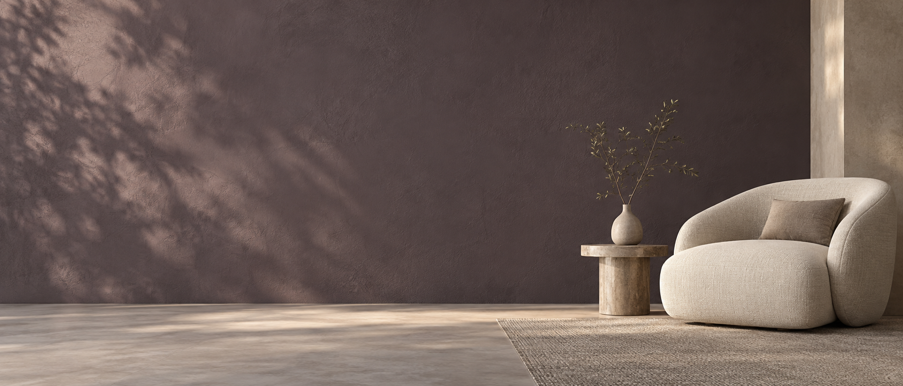

Projekt Małej Łazienki
AZIZA Pracownia Architektoniczna z przyjemnością prezentuje nowoczesny projekt małej łazienki, który został przygotowany w czterech atrakcyjnych wersjach, aby sprostać różnorodnym oczekiwaniom naszych klientów.
Wersja pierwsza charakteryzuje się subtelnym połączeniem białych frontów szafek z drewnianymi elementami wokół umywalki. Ten wybór materiałów tworzy ciepłą i przytulną atmosferę, jednocześnie zachowując minimalistyczny i nowoczesny wygląd.
Wersja druga to propozycja dla miłośników odważnych i wyrazistych rozwiązań. Białe fronty szafek zostały skontrastowane z czarnymi elementami, takimi jak uchwyty, klamki oraz armatura. Całość tworzy dynamiczny i elegancki design.
Trzecia wersja projektu to połączenie białych blatów z czarnymi elementami oraz płytkami, dopełnione blatem z czarnego kamienia. Taka kombinacja materiałów nadaje łazience nowoczesnego i luksusowego charakteru.
Czwarta wersja to propozycja dla miłośników naturalnych materiałów. Białe blaty, czarne elementy oraz płytki zostały połączone z blatem z ciemnego drewna, tworząc ciepłe i przyjemne wnętrze.
Każda z wersji została zaprojektowana z myślą o funkcjonalności i komforcie użytkowania, zapewniając jednocześnie wysoki poziom estetyki i jakości wykonania. Zapraszamy do kontaktu z nami, aby dowiedzieć się więcej o tych projektach oraz o innych propozycjach z naszej oferty.
W naszym projekcie małej łazienki wykorzystaliśmy wiele rozwiązań projektowych, które mają na celu połączenie funkcjonalności, estetyki oraz nowoczesnych trendów w designie.
Minimalizm z akcentem drewna: W pierwszej wersji projektu zastosowaliśmy białe fronty szafek, które są jednym z kluczowych elementów stylu minimalistycznego. Jednocześnie, aby dodać ciepła i naturalności, wprowadziliśmy drewniane elementy wokół umywalki. Drewno dodaje tekstury i ciepła, tworząc przytulne i harmonijne wnętrze.
Funkcjonalność: Zadbaliśmy o to, aby nasz projekt był nie tylko estetyczny, ale także funkcjonalny. Optymalizacja przestrzeni była kluczowym aspektem, szczególnie ważnym w przypadku małych łazienek. Zastosowaliśmy szafki z głębokimi szufladami oraz półki, które pomagają w utrzymaniu porządku i łatwym dostępie do wszystkich niezbędnych rzeczy.
Estetyka: Oferujemy różne wersje projektu, aby sprostać różnym gustom i oczekiwaniom naszych klientów. Od nowoczesnych i eleganckich czarnych akcentów, po naturalne i ciepłe drewniane blaty – każdy element został starannie dobrany, aby stworzyć spójny i atrakcyjny wygląd łazienki.
Oświetlenie: W naszym projekcie zwróciliśmy szczególną uwagę na oświetlenie. Dobre oświetlenie jest kluczowe dla funkcjonalności łazienki, ale także wpływa na jej atmosferę. Zastosowaliśmy różne źródła światła, takie jak lampy sufitowe i punktowe, aby stworzyć przyjemne i równomierne światło, które podkreśla piękno materiałów i detali.
Dostosowanie do przestrzeni: Nasz projekt został stworzony z myślą o optymalnym wykorzystaniu dostępnej przestrzeni. Każdy element, od szafek po armaturę, został dokładnie wymierzony i zaprojektowany tak, aby zapewnić maksymalną funkcjonalność i komfort użytkowania, nawet w niewielkiej łazience.
Projektowanie małej łazienki to zawsze wyzwanie, które wymaga kreatywności i strategicznego planowania. Architekt pracujący nad tym projektem musiał zmierzyć się z kilkoma trudnościami, aby stworzyć funkcjonalne, estetyczne i praktyczne wnętrze.
TWÓJ KOLEJNY KROK